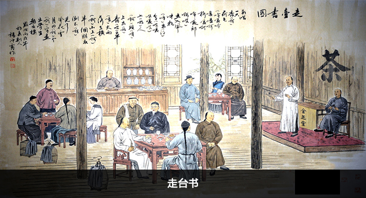

呤嗄调
2019-05-16 19:55:45
1889年，嵊州市甘霖镇马塘村北派艺人金芝堂创立。开拓了平叙性腔句，“起、平、转、落”的结构也较严密，便于说唱长本书目。“呤嗄调”有长短不同的三种接调帮唱形式，可以根据间歇、起调或落调的不同需要而灵活选用，而且低平舒展、容易上口，为越剧基调的说唱性、越剧基调的开发，奠定了良好的基础。
唱腔特征
产生后，由于南、北派唱书艺人演唱方法和所吸收的养料不同，派生了〔呤嗄南调〕和〔呤嗄北调〕
呤嗄南调也是宫调式，起、平、转、落结构，并吸收牧牛山歌成分而创立。帮腔者往往在掼调转句的末一字后面，加上“啊”“喔”“嗳”等开口音衬字，故称“开口调”。这种帮腔声，犹似农民在田间劳动时喊风助兴，又称“喊风调”。一唱众帮，明快而秀丽，歌唱性强。
呤嗄北调是宫调式，起、平、转、落结构。在〔呤嗄调〕基础上吸收俗曲小调发展而成。在演唱上鼻音味浓，犹似闭着嘴巴唱，故称“闭口调”。一唱一接，醇厚而舒展，说唱性强。